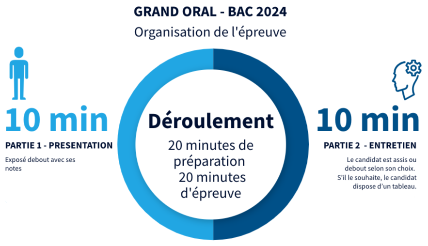

Baccalauréat
Épreuve de spécialité NSI
Références
la note de service du 11-2-2020 et la note de service du 26-9-2023 définissent les modalités de l'épreuve de l'enseignement de spécialité « numérique et sciences informatiques » au baccalauréat.
Objectifs
L’épreuve porte sur le programme de l’enseignement de spécialité de la classe de terminale en vigueur. Les notions du programme de la classe de première en vigueur non approfondies en classe de terminale, doivent être connues et mobilisables. Elles ne peuvent cependant pas constituer un ressort essentiel du sujet.
Nature de l'épreuve
L'épreuve terminale obligatoire de spécialité est composée de deux parties :
| Partie | Durée | Modalités | Note | Coefficient |
|---|---|---|---|---|
| Écrite | 3h30 | Le sujet comporte trois exercices indépendants les uns des autres, qui permettent d'évaluer les connaissances et compétences des candidats. | 20 | 0,75 |
| Pratique | 1h | La partie pratique consiste en la résolution de deux exercices sur ordinateur, chacun étant noté sur 10 points. - Le premier exercice consiste à programmer un algorithme figurant explicitement au programme dont on fournit une spécification. Il s'agit donc de restituer un algorithme rencontré et travaillé à plusieurs reprises en cours de formation. Le sujet peut proposer un jeu de test avec les réponses attendues pour permettre au candidat de vérifier son travail. - Pour le second exercice, un programme est fourni au candidat. Cet exercice ne demande pas l'écriture complète d'un programme, mais permet de valider des compétences de programmation suivant des modalités variées : le candidat doit, par exemple, compléter un programme « à trous » afin de répondre à une spécification donnée, ou encore compléter un programme pour le documenter, ou encore compléter un programme en ajoutant des assertions... |
20 | 0,25 |
La note globale de l’épreuve est donnée sur 20 points.
Banque de sujets
- Un ensemble de sujets de l'épreuve écrite est disponible à cette adresse,
- Un ensemble de sujets de l'épreuve pratique est disponible à cette adresse.
Le Grand Oral
Références
La page du Ministère de l'éducation nationale définit les modalités de l'épreuve du Grand Oral au baccalauréat.
Objectifs
Le Grand oral vous forme à prendre la parole en public de façon claire et convaincante. Cette épreuve permet aussi d’utiliser vos connaissances (celles qui sont liées à vos spécialités) pour créer une argumentation et montrer en quoi elles sont essentielles pour votre projet de poursuite d'études et même votre projet professionnel.
Nature de l'épreuve
L’épreuve du Grand oral nécessite pendant l’année, de définir deux questions adossées sur les deux enseignements de spécialité, et de préparer une réponse argumentée à ces deux questions.
La note globale de l’épreuve est donnée sur 20 points, avec un coefficient 10.
Le jury évalue le candidat selon la grille suivante.
Déroulé de l'épreuve
Le jour de l’épreuve, la démarche consiste à remettre au jury, sur une feuille signée par ses professeurs de spécialité, l’énoncé des deux questions. Le jury choisit une des deux questions.

| Partie | Durée | Modalités |
|---|---|---|
| TEMPS DE PRÉPARATION | 20 min | Le candidat prépare la structuration de son argumentation, organise son propos et peut réaliser un support pouvant lui servir d’accompagnement lors de sa prise de parole durant les 2 temps de l’épreuve. |
| 1er TEMPS DE L’ÉPREUVE | 10 min | Le candidat s’exprime debout. Il expose les motivations qui l’ont conduit au choix de la question, présente la question puis y répond. Il peut s’appuyer sur son support qu’il aura préparé lors du temps de préparation. |
| 2e TEMPS DE L’ÉPREUVE | 10 min | Le candidat échange avec les membres du jury debout ou assis, les questions du jury font écho à sa présentation et l’invitent à approfondir sa réflexion. Le candidat peut s’appuyer sur son support préparé lors du temps de préparation. Il peut le montrer au jury mais ne peut pas le lui donner. |